── Attaching core tidyverse packages ──────────────────────── tidyverse 2.0.0 ──
✔ dplyr 1.1.4 ✔ readr 2.1.6
✔ forcats 1.0.1 ✔ stringr 1.6.0
✔ ggplot2 4.0.1 ✔ tibble 3.3.1
✔ lubridate 1.9.4 ✔ tidyr 1.3.2
✔ purrr 1.2.1
── Conflicts ────────────────────────────────────────── tidyverse_conflicts() ──
✖ dplyr::filter() masks stats::filter()
✖ dplyr::lag() masks stats::lag()
ℹ Use the conflicted package (<http://conflicted.r-lib.org/>) to force all conflicts to become errors
library(brms) # For stats
Loading required package: Rcpp
Loading 'brms' package (version 2.23.0). Useful instructions
can be found by typing help('brms'). A more detailed introduction
to the package is available through vignette('brms_overview').
Attaching package: 'brms'
The following object is masked from 'package:stats':
ar
library(ggeffects) # for plotting model predictions# Note: I needed to also install the `insight` and `see` packages to get `modelbased` to install properly; try that if you get similar error messages # install.packages('modelbased') # if you need to install this packagelibrary(modelbased) # for plotting model predictions. supports the link scale (ggeffects does not)
Attaching package: 'modelbased'
The following objects are masked from 'package:ggeffects':
collapse_by_group, pool_predictions, residualize_over_grid
# install.packages('faraway') # if you need to install this packagelibrary(faraway) # For data on galapagos species richess
Attaching package: 'faraway'
The following object is masked from 'package:brms':
epilepsy
Q1.1a and Q1.1b
Counts of Clarkia flowers in a meadow
Values of response variables: Positive real numbers (can’t have a negative number of flowers), could include zeros (there may not be any flowers)
Distribution: Normal distribution
Whether or not a female elephant seal gives birth
Values of response variables: 0s and 1s (for yes: birth or no: did not give birth)
Distribution: Poisson distribution
The percent cover of red algae in the intertidal
Values of response variables: fractions, positive numbers
Distribution: Binomial distribution
Growth of a tree from one year to the next
Values of response variables: positive integers
Distribution: Normal distribution
The spatial area of a forest in square meters
Values of response variables: integers, fractions
Distribution: Binomial distribution
Q1.2
Response variable for final project: rate of flock movement (through a forest)
Values of response variables: positive real numbers, integers
Distribution: Normal distribution
1.2 GLM with a log link
# Read in the pre-stored datadata("gala")# Check out the first 6 rowshead(gala)
`stat_bin()` using `bins = 30`. Pick better value `binwidth`.
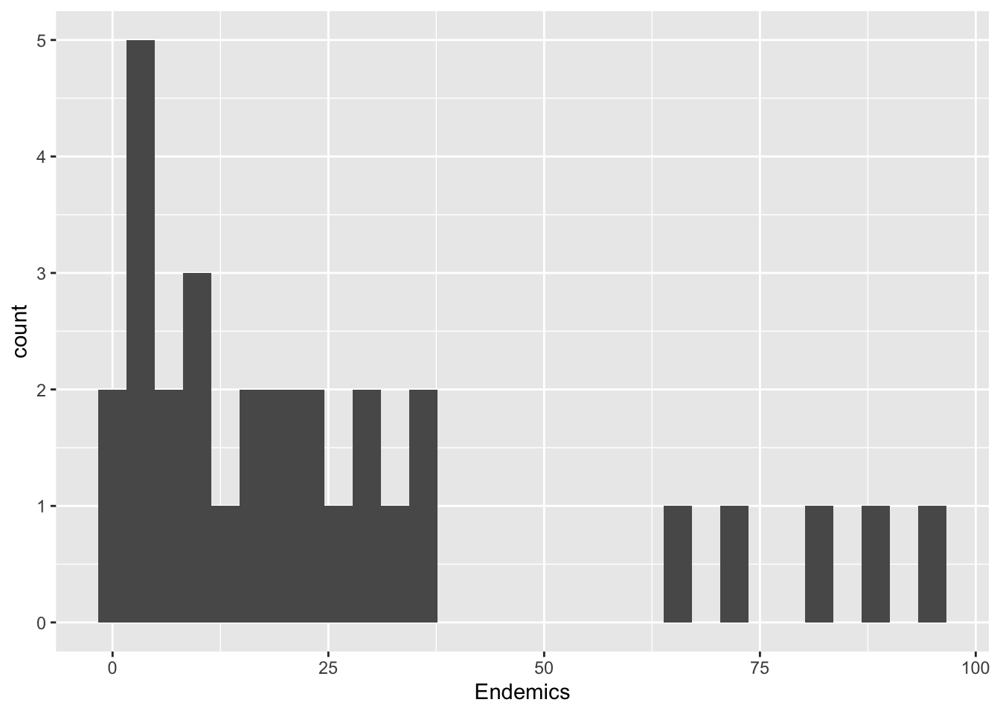
Q1.3 Answer
This data does not appear to be normally distributed. The data seems to be skewed to the left with outliers far to the right in the graph.
Q1.4 Plot Endemics ~ Elevation
ggplot(data = gala, aes(x = Elevation,y = Endemics, color = Species )) +geom_point()
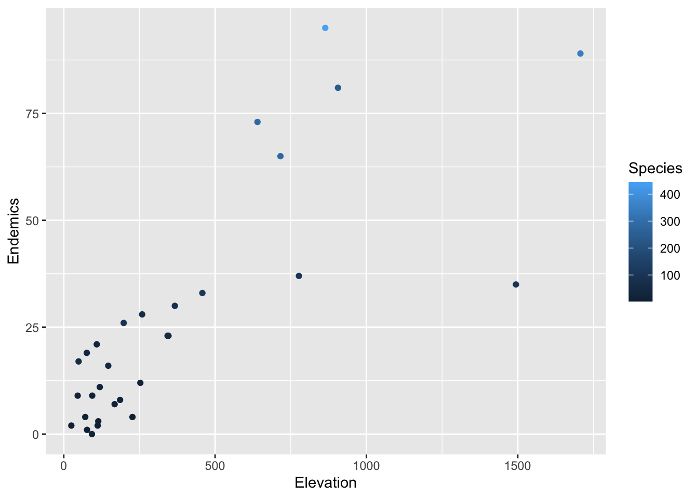
labs(x ="Elevation",y ="Endemics" )
<ggplot2::labels> List of 2
$ x: chr "Elevation"
$ y: chr "Endemics"
Run the model
# Endemics ~ Elevationm.elev <-brm(data = gala, # Give the model the penguins data# Choose a poisson distribution - THIS IS THE NEW PART!family =poisson(link ="log"),# Specify the model here. Endemics ~1+ Elevation,# Here's where you specify parameters for executing the Markov chains# We're using similar to the defaults, except we set cores to 4 so the analysis runs faster than the default of 1iter =2000, warmup =1000, chains =4, cores =4,# Save the fitted model object as output - helpful for reloading in the output laterfile ="output/m.elev")
model summary
plot(m.elev)
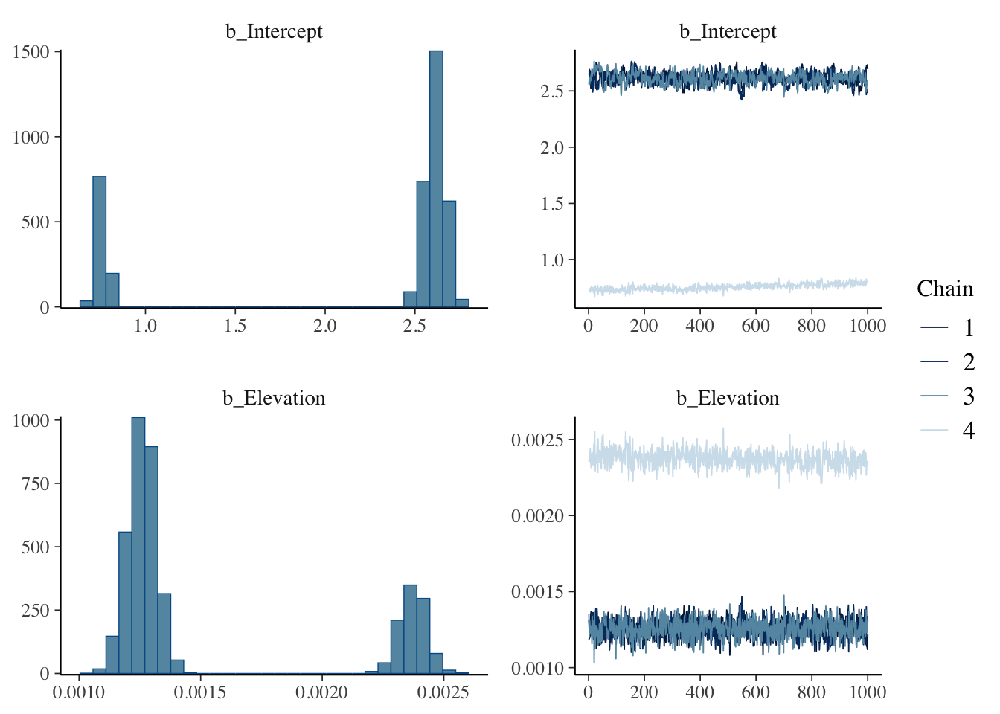
pairs(m.elev)
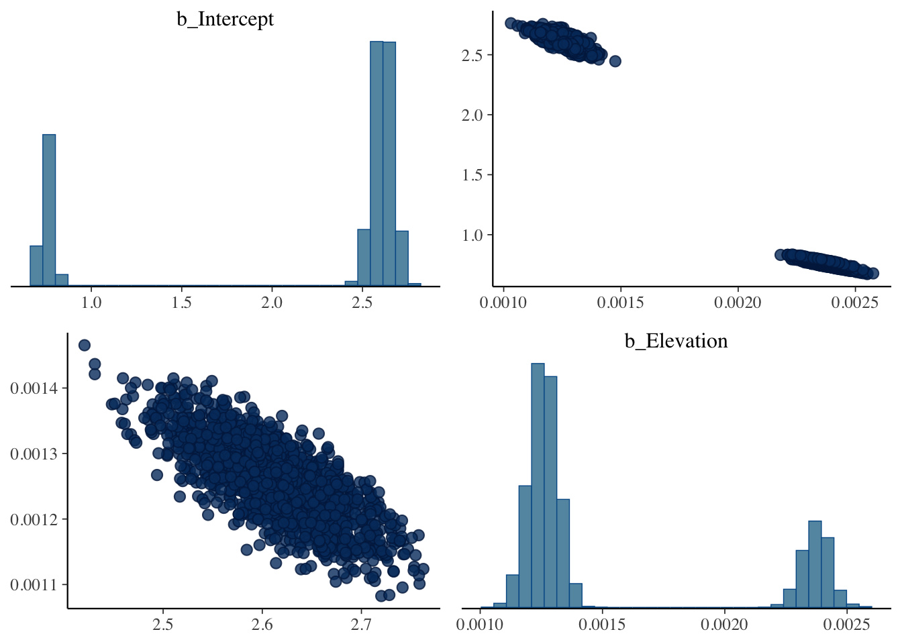
summary(m.elev)
Warning: Parts of the model have not converged (some Rhats are > 1.05). Be
careful when analysing the results! We recommend running more iterations and/or
setting stronger priors.
Family: poisson
Links: mu = log
Formula: Endemics ~ 1 + Elevation
Data: gala (Number of observations: 30)
Draws: 4 chains, each with iter = 2000; warmup = 1000; thin = 1;
total post-warmup draws = 4000
Regression Coefficients:
Estimate Est.Error l-95% CI u-95% CI Rhat Bulk_ESS Tail_ESS
Intercept 2.15 0.81 0.72 2.71 1.57 7 13
Elevation 0.00 0.00 0.00 0.00 1.53 7 27
Draws were sampled using sampling(NUTS). For each parameter, Bulk_ESS
and Tail_ESS are effective sample size measures, and Rhat is the potential
scale reduction factor on split chains (at convergence, Rhat = 1).
Q1.5 Evaluate the output
Based on the summary output, the model fitting algorithm did not converge. Our RHat value exceeds 1 and the chains do not align.
Q1.6 Center the predictors
gala <- gala |>mutate(Elevation_ctr = Elevation -mean(Elevation))# Endemics ~ Elevationm.elev2 <-brm(data = gala, # Give the model the penguins data# Choose a poisson distribution - THIS IS THE NEW PART!family =poisson(link ="log"),# Specify the model here. Endemics ~1+ Elevation_ctr,# Here's where you specify parameters for executing the Markov chains# We're using similar to the defaults, except we set cores to 4 so the analysis runs faster than the default of 1iter =6000, warmup =4000, chains =4, cores =4,prior =prior(normal(0, 0.1), class = b),# Save the fitted model object as output - helpful for reloading in the output laterfile ="output/m.elev2")
checking the model
plot(m.elev2)
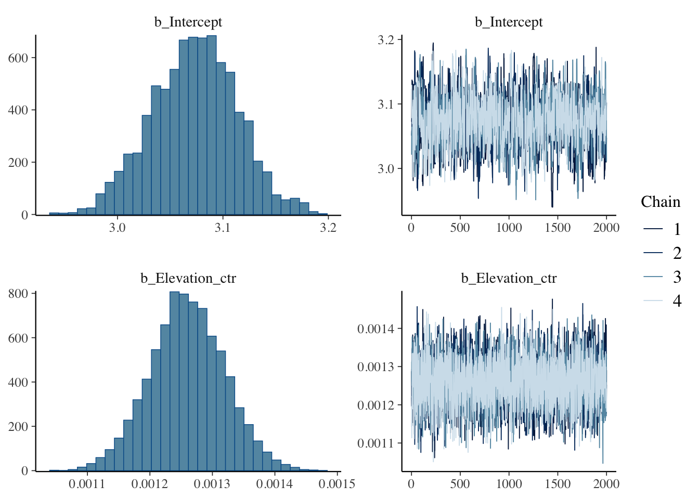
summary(m.elev2)
Family: poisson
Links: mu = log
Formula: Endemics ~ 1 + Elevation_ctr
Data: gala (Number of observations: 30)
Draws: 4 chains, each with iter = 6000; warmup = 4000; thin = 1;
total post-warmup draws = 8000
Regression Coefficients:
Estimate Est.Error l-95% CI u-95% CI Rhat Bulk_ESS Tail_ESS
Intercept 3.07 0.04 2.99 3.15 1.00 1137 1217
Elevation_ctr 0.00 0.00 0.00 0.00 1.00 3801 4656
Draws were sampled using sampling(NUTS). For each parameter, Bulk_ESS
and Tail_ESS are effective sample size measures, and Rhat is the potential
scale reduction factor on split chains (at convergence, Rhat = 1).
pairs(m.elev2)
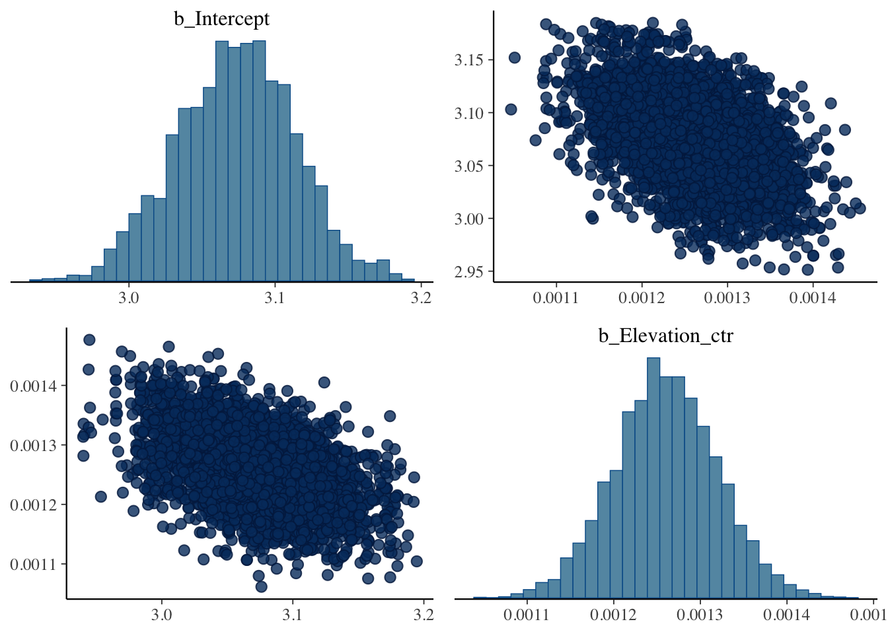
# summary(m.elev2)print(m.elev2, digits =4) #alternative summary with more decimals
Family: poisson
Links: mu = log
Formula: Endemics ~ 1 + Elevation_ctr
Data: gala (Number of observations: 30)
Draws: 4 chains, each with iter = 6000; warmup = 4000; thin = 1;
total post-warmup draws = 8000
Regression Coefficients:
Estimate Est.Error l-95% CI u-95% CI Rhat Bulk_ESS Tail_ESS
Intercept 3.0731 0.0404 2.9936 3.1513 1.0023 1137 1217
Elevation_ctr 0.0013 0.0001 0.0011 0.0014 1.0001 3801 4656
Draws were sampled using sampling(NUTS). For each parameter, Bulk_ESS
and Tail_ESS are effective sample size measures, and Rhat is the potential
scale reduction factor on split chains (at convergence, Rhat = 1).
Plot the posterior
#plotting posterior predictionspreds <-estimate_expectation(m.elev2, by ='Elevation_ctr') plot(preds, show_data =TRUE)
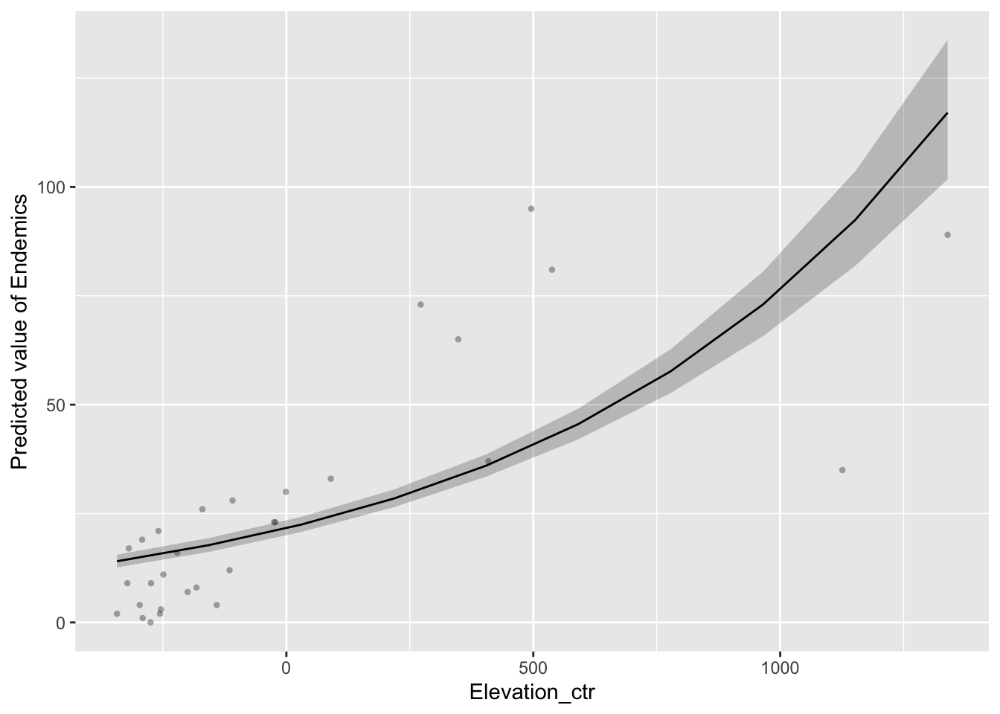
# visualizing linear modelpredslog <-estimate_expectation(m.elev2, by ='Elevation_ctr', predict ='link')plot(predslog)
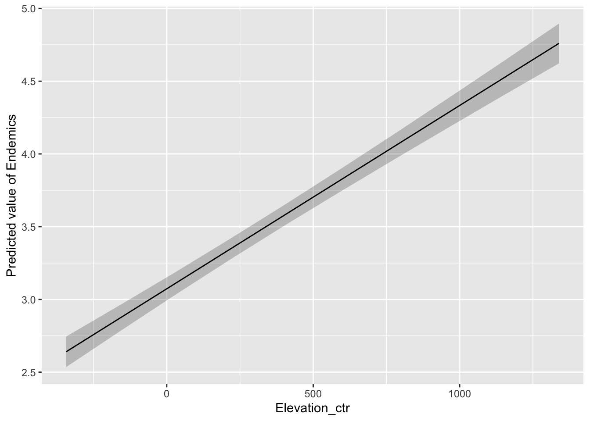
##Interpreting Link scale coeffs
print(m.elev2, digits =4)
Family: poisson
Links: mu = log
Formula: Endemics ~ 1 + Elevation_ctr
Data: gala (Number of observations: 30)
Draws: 4 chains, each with iter = 6000; warmup = 4000; thin = 1;
total post-warmup draws = 8000
Regression Coefficients:
Estimate Est.Error l-95% CI u-95% CI Rhat Bulk_ESS Tail_ESS
Intercept 3.0731 0.0404 2.9936 3.1513 1.0023 1137 1217
Elevation_ctr 0.0013 0.0001 0.0011 0.0014 1.0001 3801 4656
Draws were sampled using sampling(NUTS). For each parameter, Bulk_ESS
and Tail_ESS are effective sample size measures, and Rhat is the potential
scale reduction factor on split chains (at convergence, Rhat = 1).
Backtransform
# backtransforming slope valueexp(0.0013)
[1] 1.001301
Interpret
plot(preds, show_data =TRUE)
# for every 1m of elevation, you get an increase in 1.0013 times as many species as the previous meter.
##Q1.7 What is the percent change on the response scale?
Number of Clarkias blooming as a function of temperature in Celsius: 1.09
exp(1.09)
[1] 2.974274
(2.974274-1)*100
[1] 197.4274
# Back transformed: 197.4274% increase in number of Clarkias for every 1 degree increase in Celsius
Density of sea urchins per square meter in a quadrat as a function of number of sea otters: -2.5
(exp(-2.5) -1)*100
[1] -91.7915
# Back transformed: 0.082085# For every increase in 1 sea otter there is a 91.7915% decrease in density of sea urchins per square meter.
Number of tomatoes per plant as a function of kg of fertilizer: 6.24
exp(6.24)
[1] 512.8585
(exp(6.24)-1)*100
[1] 51185.85
# Back transformed: 512.8585 tomatoes per plant # For every increase in 1kg of fertilizer, there will be a 51185.85% increase in tomatoes per plant.
DIY: Run a model of non-endemic species ~ distance from Santa Cruz Island
Q1.8 Create a non-endemic column
gala2 <- gala %>%mutate(non_Endemics = Species - Endemics)# making a plot with new tibbleggplot(data = gala2, aes(x = Scruz,y = non_Endemics, color = Species )) +geom_point()
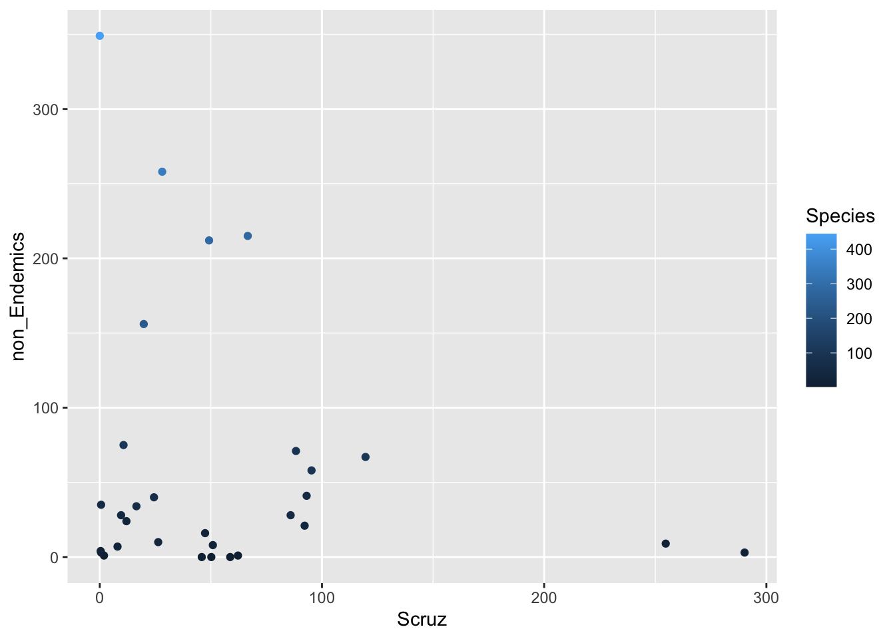
labs(x ="Santa Cruz Island (km)",y ="Non Endemic Species" )
<ggplot2::labels> List of 2
$ x: chr "Santa Cruz Island (km)"
$ y: chr "Non Endemic Species"
Q1.9 Run a model of non Endemics ~ distance from Santa Cruz Island
#model for non edemics as function of distance from santa cruz islandsgala2model <-brm(data = gala2, # Give the model the penguins data# Choose a poisson distribution - THIS IS THE NEW PART!family =poisson(link ="log"),# Specify the model here. non_Endemics ~1+ Scruz,# Here's where you specify parameters for executing the Markov chains# We're using similar to the defaults, except we set cores to 4 so the analysis runs faster than the default of 1iter =6000, warmup =4000, chains =4, cores =4,prior =prior(normal(0, 0.1), class = b),# Save the fitted model object as output - helpful for reloading in the output laterfile ="output/gala2model")
Q1.10 Evaluate the output
plot(gala2model)
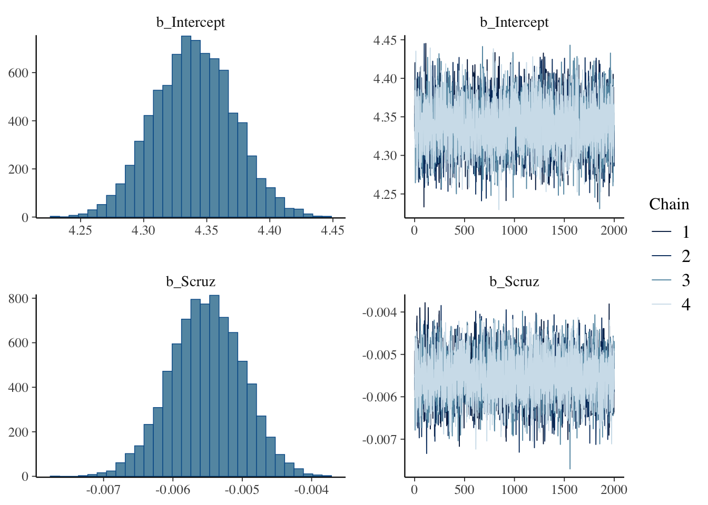
print(gala2model, digits =4)
Family: poisson
Links: mu = log
Formula: non_Endemics ~ 1 + Scruz
Data: gala2 (Number of observations: 30)
Draws: 4 chains, each with iter = 6000; warmup = 4000; thin = 1;
total post-warmup draws = 8000
Regression Coefficients:
Estimate Est.Error l-95% CI u-95% CI Rhat Bulk_ESS Tail_ESS
Intercept 4.3396 0.0316 4.2785 4.4020 1.0001 5774 5636
Scruz -0.0055 0.0005 -0.0066 -0.0045 1.0006 5365 5369
Draws were sampled using sampling(NUTS). For each parameter, Bulk_ESS
and Tail_ESS are effective sample size measures, and Rhat is the potential
scale reduction factor on split chains (at convergence, Rhat = 1).
Our model ran correctly. The Rhat is 1, the chains overlap, and the posteriors are normally distributed. Our confidence intervals do not contain zero.
Q1.11 Interpret the output
The number of non endemic species decreases as distance from Santa Cruz island increases.
Original output on log scale: 0.0055 log(non-endemic species)
Backtransformed:0.9945151
exp(-0.0055)
[1] 0.9945151
% change: For every 1 km increase in the distance from Santa Cruz island, there is a 0.54% decrease in non endemic species.
(exp(-0.0055)-1)*100
[1] -0.5484903
Yes it appears the slope estimate is different from zero because the confidence intervals do not contain zero.
Q1.12 Plot the posterior
# log link scalepreds <-estimate_expectation(gala2model, by ='Scruz') plot(preds, show_data =TRUE)
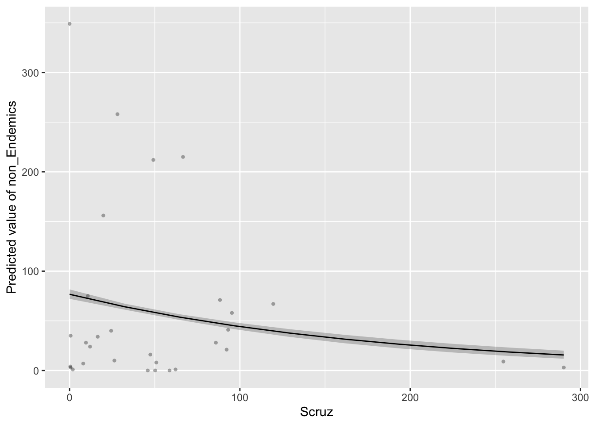
# visualizing linear modelpredslog <-estimate_expectation(gala2model, by ='Scruz', predict ='link')plot(predslog)
# running model m.turt <-brm(data = turtle, # Give the model the data# Choose a binomial distribution - THIS IS THE NEW PART!family =binomial(link ="logit"),# Specify the model here. female |trials(total_turtles) ~1+ temp,# Here's where you specify parameters for executing the Markov chains# We're using similar to the defaults, except we set cores to 4 so the analysis runs faster than the default of 1iter =4000, warmup =1000, chains =4, cores =4,# Save the fitted model object as output - helpful for reloading in the output laterfile ="output/m.turt")
# model outputsummary(m.turt)
Family: binomial
Links: mu = logit
Formula: female | trials(total_turtles) ~ 1 + temp
Data: turtle (Number of observations: 15)
Draws: 4 chains, each with iter = 4000; warmup = 1000; thin = 1;
total post-warmup draws = 12000
Regression Coefficients:
Estimate Est.Error l-95% CI u-95% CI Rhat Bulk_ESS Tail_ESS
Intercept 63.00 12.08 40.68 88.62 1.00 4675 5550
temp -2.27 0.43 -3.19 -1.47 1.00 4623 5557
Draws were sampled using sampling(NUTS). For each parameter, Bulk_ESS
and Tail_ESS are effective sample size measures, and Rhat is the potential
scale reduction factor on split chains (at convergence, Rhat = 1).
plot(m.turt)
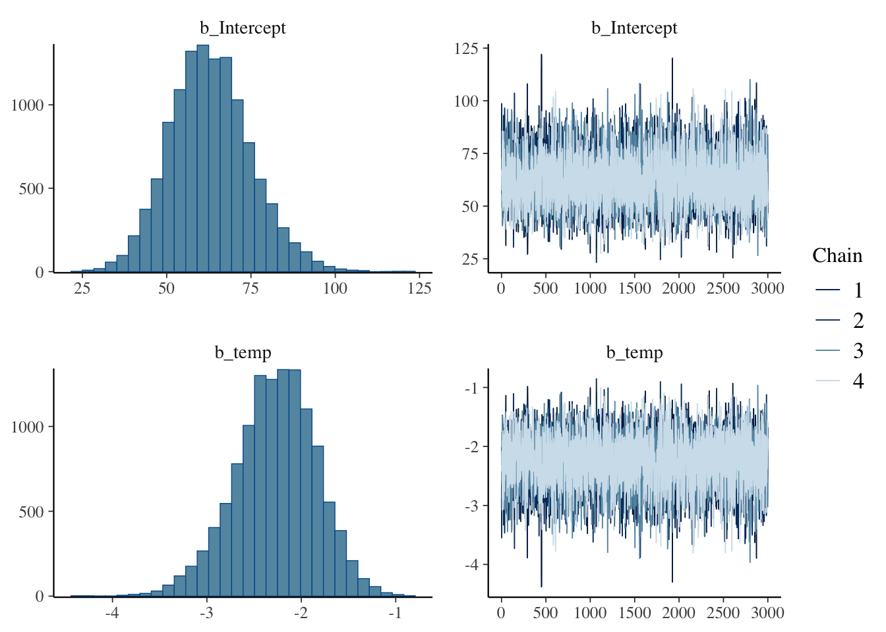
Model interpretations
Our model ran correctly. The Rhat is 1, posteriors are normally distributed, the chains overlap, and the confidence intervals do no include zero.
Interpreting plot predictions
pred <-predict_response(m.turt, condition =c(total_turtles =10))plot(pred)
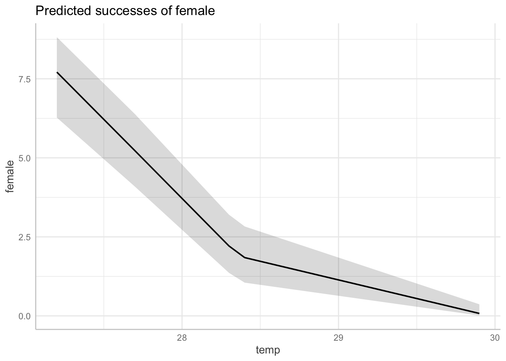
2. Multilevel models
Q2.1 Fixed effects vs random effects
Student high school graduation rates as a function of: parental income, state of residence, and school district
Fixed: state of residence, school district
Random: parental income
Density of kelp as a function of: latitude, site, transect number, and density of sea urchins
Fixed: latitude, transect number
Random: density of sea urchins, site
Probability of whale giving birth as a function of: age, annual temperature, year, individual ID
pie_crab %>%ggplot(aes(x = air_temp, y = size)) +geom_point()
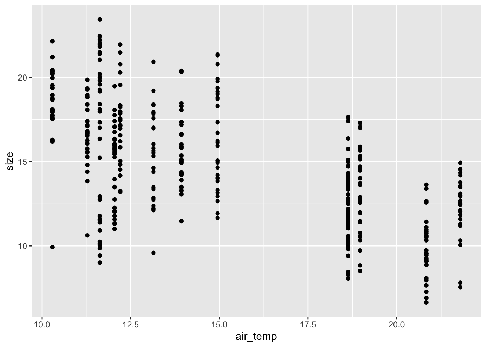
# running crab modelm.watertemp <-brm(data = pie_crab, # Give the model the penguins data# Use a gamma distributionfamily =Gamma(link ="log"),# Specify the model here. size ~1+ water_temp,# Here's where you specify parameters for executing the Markov chains# We're using similar to the defaults, except we set cores to 4 so the analysis runs faster than the default of 1iter =2000, warmup =1000, chains =4, cores =4,# Save the fitted model object as output - helpful for reloading in the output laterfile ="output/m.watertemp")print(m.watertemp, digits =3)
Family: gamma
Links: mu = log
Formula: size ~ 1 + water_temp
Data: pie_crab (Number of observations: 392)
Draws: 4 chains, each with iter = 2000; warmup = 1000; thin = 1;
total post-warmup draws = 4000
Regression Coefficients:
Estimate Est.Error l-95% CI u-95% CI Rhat Bulk_ESS Tail_ESS
Intercept 3.356 0.055 3.250 3.465 1.001 5308 3289
water_temp -0.039 0.003 -0.044 -0.033 1.001 5255 3218
Further Distributional Parameters:
Estimate Est.Error l-95% CI u-95% CI Rhat Bulk_ESS Tail_ESS
shape 23.242 1.644 20.153 26.554 1.001 2572 2582
Draws were sampled using sampling(NUTS). For each parameter, Bulk_ESS
and Tail_ESS are effective sample size measures, and Rhat is the potential
scale reduction factor on split chains (at convergence, Rhat = 1).
#site as a random effectm.watertemp.site <-brm(data = pie_crab, # Give the model the penguins data# Use a gamma distributionfamily =Gamma(link ="log"),# Specify the model here. size ~1+ water_temp + (1|site),# Here's where you specify parameters for executing the Markov chains# We're using similar to the defaults, except we set cores to 4 so the analysis runs faster than the default of 1iter =2000, warmup =1000, chains =4, cores =4,# Save the fitted model object as output - helpful for reloading in the output laterfile ="output/m.watertemp.site")print(m.watertemp.site, digits =3)
Family: gamma
Links: mu = log
Formula: size ~ 1 + water_temp + (1 | site)
Data: pie_crab (Number of observations: 392)
Draws: 4 chains, each with iter = 2000; warmup = 1000; thin = 1;
total post-warmup draws = 4000
Multilevel Hyperparameters:
~site (Number of levels: 13)
Estimate Est.Error l-95% CI u-95% CI Rhat Bulk_ESS Tail_ESS
sd(Intercept) 0.125 0.035 0.077 0.213 1.002 886 1198
Regression Coefficients:
Estimate Est.Error l-95% CI u-95% CI Rhat Bulk_ESS Tail_ESS
Intercept 3.372 0.203 2.970 3.778 1.003 1055 1133
water_temp -0.040 0.011 -0.062 -0.017 1.003 1072 1220
Further Distributional Parameters:
Estimate Est.Error l-95% CI u-95% CI Rhat Bulk_ESS Tail_ESS
shape 30.115 2.168 26.002 34.555 1.000 3067 2243
Draws were sampled using sampling(NUTS). For each parameter, Bulk_ESS
and Tail_ESS are effective sample size measures, and Rhat is the potential
scale reduction factor on split chains (at convergence, Rhat = 1).
Q2.2 What is the effect of water_temp on crab size on the response scale?
What is the effect of water_temp on crab size?
original output on the log scale: -0.039
your backtransformed value
exp(-0.039)
[1] 0.9617507
the percent change that this translates to. Describe the effect using the proper units.
For every 1 degree Celsius increase in water temperature, there crab size decrease by 3.82%.
(exp(-0.039)-1)*100
[1] -3.824929
Does it seem like the slope estimate is different from zero? Why?
Yes, the confidence interval for slope does not include zero.
Q2.3 Compare WAIC and PSIS of the two models
The model including water temperature and site was better predictive power that the model that only included water temperature.
loo(m.watertemp.site)
Computed from 4000 by 392 log-likelihood matrix.
Estimate SE
elpd_loo -938.3 13.7
p_loo 12.1 0.8
looic 1876.6 27.4
------
MCSE of elpd_loo is 0.1.
MCSE and ESS estimates assume MCMC draws (r_eff in [0.6, 1.8]).
All Pareto k estimates are good (k < 0.7).
See help('pareto-k-diagnostic') for details.
loo(m.watertemp)
Computed from 4000 by 392 log-likelihood matrix.
Estimate SE
elpd_loo -984.7 12.1
p_loo 2.8 0.2
looic 1969.5 24.3
------
MCSE of elpd_loo is 0.0.
MCSE and ESS estimates assume MCMC draws (r_eff in [0.6, 1.1]).
All Pareto k estimates are good (k < 0.7).
See help('pareto-k-diagnostic') for details.
waic(m.watertemp.site)
Computed from 4000 by 392 log-likelihood matrix.
Estimate SE
elpd_waic -938.3 13.7
p_waic 12.0 0.8
waic 1876.6 27.4
waic(m.watertemp)
Computed from 4000 by 392 log-likelihood matrix.
Estimate SE
elpd_waic -984.7 12.1
p_waic 2.8 0.2
waic 1969.5 24.3